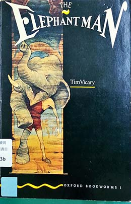
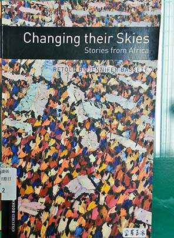

<html lang="en"></html><head><meta charset="UTF-8"/><title>EEweb</title><link rel="stylesheet" type="text/css" href="./semantic-ui/semantic.css"/><link rel="stylesheet" type="text/css" href="./asset/stylesheets/reset.css"/></head><body><div id="navbar" class="ui stackable menu container"><a href="./home.html" class="active item">EEWEB</a><a href="./home.html" class="item"><i class="home icon"></i>HOME</a><a href="./intro.html" class="item"><i class="empty star icon"></i>INTRO</a><a href="./library.html" class="item"><i class="book icon"></i>LIBRARY</a><a href="./record.html" class="item"><i class="history icon"></i>RECORDS</a></div><br/><div class="ui container"><div class="ui four stackable cards"><div class="card red"><div class="content"><div class="header">Taxi of Terror</div></div><a class="image"></a><div class="content"><div class="meta"><span class="right floated time">架上有書</span><span class="category">Oxford 系列 / OS-1</span></div></div><div class="ui bottom attached button"><i class="print icon"></i>      列印借書單</div></div><div class="card red"><div class="content"><div class="header">Dead man's Money</div></div><a class="image"></a><div class="content"><div class="meta"><span class="right floated time">架上有書</span><span class="category">Oxford 系列 / OS-2</span></div></div><div class="ui bottom attached button"><i class="print icon"></i>      列印借書單</div></div><div class="card red"><div class="content"><div class="header">Escape</div></div><a class="image"></a><div class="content"><div class="meta"><span class="right floated time">架上有書</span><span class="category">Oxford 系列 / OS-3</span></div></div><div class="ui bottom attached button"><i class="print icon"></i>      列印借書單</div></div><div class="card red"><div class="content"><div class="header">The Meaning of Gifts: Stories from Turkey</div></div><a class="image"></a><div class="content"><div class="meta"><span class="right floated time">架上有書</span><span class="category">Oxford 系列 / O1-1</span></div></div><div class="ui bottom attached button"><i class="print icon"></i>      列印借書單</div></div><div class="card red"><div class="content"><div class="header">Pocahontas</div></div><a class="image"></a><div class="content"><div class="meta"><span class="right floated time">架上有書</span><span class="category">Oxford 系列 / O1-2</span></div></div><div class="ui bottom attached button"><i class="print icon"></i>      列印借書單</div></div><div class="card red"><div class="content"><div class="header">Les Miserables</div></div><a class="image"></a><div class="content"><div class="meta"><span class="right floated time">架上有書</span><span class="category">Oxford 系列 / O1-3</span></div></div><div class="ui bottom attached button"><i class="print icon"></i>      列印借書單</div></div><div class="card red"><div class="content"><div class="header">The Coldest Place on Earth</div></div><a class="image"></a><div class="content"><div class="meta"><span class="right floated time">架上有書</span><span class="category">Oxford 系列 / O1-4</span></div></div><div class="ui bottom attached button"><i class="print icon"></i>      列印借書單</div></div><div class="card red"><div class="content"><div class="header">Ned Kelly: A True Story</div></div><a class="image"></a><div class="content"><div class="meta"><span class="right floated time">架上有書</span><span class="category">Oxford 系列 / O1-5</span></div></div><div class="ui bottom attached button"><i class="print icon"></i>      列印借書單</div></div><div class="card red"><div class="content"><div class="header">Sherlock Holmes: Two Plays</div></div><a class="image"></a><div class="content"><div class="meta"><span class="right floated time">架上有書</span><span class="category">Oxford 系列 / O1-6</span></div></div><div class="ui bottom attached button"><i class="print icon"></i>      列印借書單</div></div><div class="card red"><div class="content"><div class="header">A Ghost in Love and Other Plays</div></div><a class="image"></a><div class="content"><div class="meta"><span class="right floated time">架上有書</span><span class="category">Oxford 系列 / O1-8</span></div></div><div class="ui bottom attached button"><i class="print icon"></i>      列印借書單</div></div><div class="card red"><div class="content"><div class="header">Five Short Plays</div></div><a class="image"></a><div class="content"><div class="meta"><span class="right floated time">架上有書</span><span class="category">Oxford 系列 / O1-9</span></div></div><div class="ui bottom attached button"><i class="print icon"></i>      列印借書單</div></div><div class="card red"><div class="content"><div class="header">The Phantom of the Opera</div></div><a class="image"></a><div class="content"><div class="meta"><span class="right floated time">架上有書</span><span class="category">Oxford 系列 / O1-10a</span></div></div><div class="ui bottom attached button"><i class="print icon"></i>      列印借書單</div></div><div class="card red"><div class="content"><div class="header">The Phantom of the Opera</div></div><a class="image"></a><div class="content"><div class="meta"><span class="right floated time">架上有書</span><span class="category">Oxford 系列 / O1-10b</span></div></div><div class="ui bottom attached button"><i class="print icon"></i>      列印借書單</div></div><div class="card red"><div class="content"><div class="header">The Monkey’s Paw</div></div><a class="image"></a><div class="content"><div class="meta"><span class="right floated time">架上有書</span><span class="category">Oxford 系列 / O1-11</span></div></div><div class="ui bottom attached button"><i class="print icon"></i>      列印借書單</div></div><div class="card red"><div class="content"><div class="header">Under the Moon</div></div><a class="image"></a><div class="content"><div class="meta"><span class="right floated time">架上有書</span><span class="category">Oxford 系列 / O1-12</span></div></div><div class="ui bottom attached button"><i class="print icon"></i>      列印借書單</div></div><div class="card red"><div class="content"><div class="header">The Elephant Man</div></div><a class="image"></a><div class="content"><div class="meta"><span class="right floated time">架上有書</span><span class="category">Oxford 系列 / O1-13a</span></div></div><div class="ui bottom attached button"><i class="print icon"></i>      列印借書單</div></div><div class="card red"><div class="content"><div class="header">The Elephant Man</div></div><a class="image"></a><div class="content"><div class="meta"><span class="right floated time">架上有書</span><span class="category">Oxford 系列 / O1-13b</span></div></div><div class="ui bottom attached button"><i class="print icon"></i>      列印借書單</div></div><div class="card red"><div class="content"><div class="header">Cries from the Heart: Stories from Around the World</div></div><a class="image"></a><div class="content"><div class="meta"><span class="right floated time">架上有書</span><span class="category">Oxford 系列 / O2-1</span></div></div><div class="ui bottom attached button"><i class="print icon"></i>      列印借書單</div></div><div class="card red"><div class="content"><div class="header">Changing Their Skies: Stories from Africa</div></div><a class="image"></a><div class="content"><div class="meta"><span class="right floated time">架上有書</span><span class="category">Oxford 系列 / O2-2</span></div></div><div class="ui bottom attached button"><i class="print icon"></i>      列印借書單</div></div><div class="card red"><div class="content"><div class="header">The Jungle Book</div></div><a class="image"></a><div class="content"><div class="meta"><span class="right floated time">架上有書</span><span class="category">Oxford 系列 / O2-3</span></div></div><div class="ui bottom attached button"><i class="print icon"></i>      列印借書單</div></div><div class="card red"><div class="content"><div class="header">Red Dog</div></div><a class="image"></a><div class="content"><div class="meta"><span class="right floated time">架上有書</span><span class="category">Oxford 系列 / O2-4</span></div></div><div class="ui bottom attached button"><i class="print icon"></i>      列印借書單</div></div><div class="card red"><div class="content"><div class="header">The Importance of Being Earnest</div></div><a class="image"></a><div class="content"><div class="meta"><span class="right floated time">架上有書</span><span class="category">Oxford 系列 / O2-5</span></div></div><div class="ui bottom attached button"><i class="print icon"></i>      列印借書單</div></div><div class="card red"><div class="content"><div class="header">Agatha Christie, Woman of Mystery</div></div><a class="image"></a><div class="content"><div class="meta"><span class="right floated time">架上有書</span><span class="category">Oxford 系列 / O2-6</span></div></div><div class="ui bottom attached button"><i class="print icon"></i>      列印借書單</div></div><div class="card red"><div class="content"><div class="header">One Thousand Dollars and other Plays</div></div><a class="image"></a><div class="content"><div class="meta"><span class="right floated time">架上有書</span><span class="category">Oxford 系列 / O2-7</span></div></div><div class="ui bottom attached button"><i class="print icon"></i>      列印借書單</div></div><div class="card red"><div class="content"><div class="header">Robinson Crusoe</div></div><a class="image"></a><div class="content"><div class="meta"><span class="right floated time">架上有書</span><span class="category">Oxford 系列 / O2-8</span></div></div><div class="ui bottom attached button"><i class="print icon"></i>      列印借書單</div></div><div class="card red"><div class="content"><div class="header">Songs from the Soul: Stories from Around the World</div></div><a class="image"></a><div class="content"><div class="meta"><span class="right floated time">架上有書</span><span class="category">Oxford 系列 / O2-9</span></div></div><div class="ui bottom attached button"><i class="print icon"></i>      列印借書單</div></div><div class="card red"><div class="content"><div class="header">The Love of a King </div></div><a class="image"></a><div class="content"><div class="meta"><span class="right floated time">架上有書</span><span class="category">Oxford 系列 / O2-10</span></div></div><div class="ui bottom attached button"><i class="print icon"></i>      列印借書單</div></div><div class="card red"><div class="content"><div class="header">Sherlock Holmes: Short Stories</div></div><a class="image"></a><div class="content"><div class="meta"><span class="right floated time">架上有書</span><span class="category">Oxford 系列 / O2-11</span></div></div><div class="ui bottom attached button"><i class="print icon"></i>      列印借書單</div></div><div class="card red"><div class="content"><div class="header">The Piano</div></div><a class="image"></a><div class="content"><div class="meta"><span class="right floated time">架上有書</span><span class="category">Oxford 系列 / O2-12</span></div></div><div class="ui bottom attached button"><i class="print icon"></i>      列印借書單</div></div><div class="card red"><div class="content"><div class="header">Voodoo Island</div></div><a class="image"></a><div class="content"><div class="meta"><span class="right floated time">架上有書</span><span class="category">Oxford 系列 / O2-13</span></div></div><div class="ui bottom attached button"><i class="print icon"></i>      列印借書單</div></div><div class="card red"><div class="content"><div class="header">Playing with Fire: Stories from the Pacific Rim</div></div><a class="image"></a><div class="content"><div class="meta"><span class="right floated time">架上有書</span><span class="category">Oxford 系列 / O3-1</span></div></div><div class="ui bottom attached button"><i class="print icon"></i>      列印借書單</div></div><div class="card red"><div class="content"><div class="header">Dancing with Strangers: Stories from Africa</div></div><a class="image"></a><div class="content"><div class="meta"><span class="right floated time">架上有書</span><span class="category">Oxford 系列 / O3-2</span></div></div><div class="ui bottom attached button"><i class="print icon"></i>      列印借書單</div></div><div class="card red"><div class="content"><div class="header">Leaving No Footprint: Stories from Asia</div></div><a class="image"></a><div class="content"><div class="meta"><span class="right floated time">架上有書</span><span class="category">Oxford 系列 / O3-3</span></div></div><div class="ui bottom attached button"><i class="print icon"></i>      列印借書單</div></div><div class="card red"><div class="content"><div class="header">A Midsummer Night’s Dream</div></div><a class="image"></a><div class="content"><div class="meta"><span class="right floated time">架上有書</span><span class="category">Oxford 系列 / O3-4</span></div></div><div class="ui bottom attached button"><i class="print icon"></i>      列印借書單</div></div><div class="card red"><div class="content"><div class="header">The Wind in the Willows</div></div><a class="image"></a><div class="content"><div class="meta"><span class="right floated time">架上有書</span><span class="category">Oxford 系列 / O3-5</span></div></div><div class="ui bottom attached button"><i class="print icon"></i>      列印借書單</div></div><div class="card red"><div class="content"><div class="header">The Long White Cloud: Stories from New Zealand</div></div><a class="image"></a><div class="content"><div class="meta"><span class="right floated time">架上有書</span><span class="category">Oxford 系列 / O3-6</span></div></div><div class="ui bottom attached button"><i class="print icon"></i>      列印借書單</div></div><div class="card red"><div class="content"><div class="header">Chemical Secret</div></div><a class="image"></a><div class="content"><div class="meta"><span class="right floated time">架上有書</span><span class="category">Oxford 系列 / O3-7</span></div></div><div class="ui bottom attached button"><i class="print icon"></i>      列印借書單</div></div><div class="card red"><div class="content"><div class="header">Wyatt’s Hurricane</div></div><a class="image"></a><div class="content"><div class="meta"><span class="right floated time">架上有書</span><span class="category">Oxford 系列 / O3-8</span></div></div><div class="ui bottom attached button"><i class="print icon"></i>      列印借書單</div></div><div class="card red"><div class="content"><div class="header">The Last Sherlock Holmes Story</div></div><a class="image"></a><div class="content"><div class="meta"><span class="right floated time">架上有書</span><span class="category">Oxford 系列 / O3-9</span></div></div><div class="ui bottom attached button"><i class="print icon"></i>      列印借書單</div></div><div class="card red"><div class="content"><div class="header">The Star Zoo</div></div><a class="image"></a><div class="content"><div class="meta"><span class="right floated time">架上有書</span><span class="category">Oxford 系列 / O3-10</span></div></div><div class="ui bottom attached button"><i class="print icon"></i>      列印借書單</div></div><div class="card red"><div class="content"><div class="header">Tales of Mystery and Imagination</div></div><a class="image"></a><div class="content"><div class="meta"><span class="right floated time">架上有書</span><span class="category">Oxford 系列 / O3-11</span></div></div><div class="ui bottom attached button"><i class="print icon"></i>      列印借書單</div></div><div class="card red"><div class="content"><div class="header">The Bronte Story</div></div><a class="image"></a><div class="content"><div class="meta"><span class="right floated time">架上有書</span><span class="category">Oxford 系列 / O3-12</span></div></div><div class="ui bottom attached button"><i class="print icon"></i>      列印借書單</div></div><div class="card red"><div class="content"><div class="header">Go, Lovely Rose: Short Stories</div></div><a class="image"></a><div class="content"><div class="meta"><span class="right floated time">架上有書</span><span class="category">Oxford 系列 / O3-13</span></div></div><div class="ui bottom attached button"><i class="print icon"></i>      列印借書單</div></div><div class="card red"><div class="content"><div class="header">The Picture of Dorian Gray</div></div><a class="image"></a><div class="content"><div class="meta"><span class="right floated time">架上有書</span><span class="category">Oxford 系列 / O3-14</span></div></div><div class="ui bottom attached button"><i class="print icon"></i>      列印借書單</div></div><div class="card red"><div class="content"><div class="header">A Christmas Carol</div></div><a class="image"></a><div class="content"><div class="meta"><span class="right floated time">架上有書</span><span class="category">Oxford 系列 / O3-15</span></div></div><div class="ui bottom attached button"><i class="print icon"></i>      列印借書單</div></div><div class="card red"><div class="content"><div class="header">Skyjack!</div></div><a class="image"></a><div class="content"><div class="meta"><span class="right floated time">架上有書</span><span class="category">Oxford 系列 / O3-16a</span></div></div><div class="ui bottom attached button"><i class="print icon"></i>      列印借書單</div></div><div class="card red"><div class="content"><div class="header">Skyjack!</div></div><a class="image"></a><div class="content"><div class="meta"><span class="right floated time">架上有書</span><span class="category">Oxford 系列 / O3-16b</span></div></div><div class="ui bottom attached button"><i class="print icon"></i>      列印借書單</div></div><div class="card red"><div class="content"><div class="header">The Secret Garden</div></div><a class="image"></a><div class="content"><div class="meta"><span class="right floated time">架上有書</span><span class="category">Oxford 系列 / O3-17</span></div></div><div class="ui bottom attached button"><i class="print icon"></i>      列印借書單</div></div><div class="card red"><div class="content"><div class="header">On the Edge</div></div><a class="image"></a><div class="content"><div class="meta"><span class="right floated time">架上有書</span><span class="category">Oxford 系列 / O3-18</span></div></div><div class="ui bottom attached button"><i class="print icon"></i>      列印借書單</div></div><div class="card red"><div class="content"><div class="header">The Call of the Wild</div></div><a class="image"></a><div class="content"><div class="meta"><span class="right floated time">架上有書</span><span class="category">Oxford 系列 / O3-19</span></div></div><div class="ui bottom attached button"><i class="print icon"></i>      列印借書單</div></div><div class="card red"><div class="content"><div class="header">Rabbit-Proof Fence</div></div><a class="image"></a><div class="content"><div class="meta"><span class="right floated time">架上有書</span><span class="category">Oxford 系列 / O3-20</span></div></div><div class="ui bottom attached button"><i class="print icon"></i>      列印借書單</div></div><div class="card red"><div class="content"><div class="header">The Price of Peace: Stories from Africa</div></div><a class="image"></a><div class="content"><div class="meta"><span class="right floated time">架上有書</span><span class="category">Oxford 系列 / O4-1</span></div></div><div class="ui bottom attached button"><i class="print icon"></i>      列印借書單</div></div><div class="card red"><div class="content"><div class="header">Land of My Childhood: Stories from South Asia</div></div><a class="image"></a><div class="content"><div class="meta"><span class="right floated time">架上有書</span><span class="category">Oxford 系列 / O4-2</span></div></div><div class="ui bottom attached button"><i class="print icon"></i>      列印借書單</div></div><div class="card red"><div class="content"><div class="header">The Big Sleep</div></div><a class="image"></a><div class="content"><div class="meta"><span class="right floated time">架上有書</span><span class="category">Oxford 系列 / O4-3</span></div></div><div class="ui bottom attached button"><i class="print icon"></i>      列印借書單</div></div><div class="card red"><div class="content"><div class="header">Arman’s Journey</div></div><a class="image"></a><div class="content"><div class="meta"><span class="right floated time">架上有書</span><span class="category">Cambridge 系列 / CS-2</span></div></div><div class="ui bottom attached button"><i class="print icon"></i>      列印借書單</div></div><div class="card red"><div class="content"><div class="header">Let Me Out!</div></div><a class="image"></a><div class="content"><div class="meta"><span class="right floated time">架上有書</span><span class="category">Cambridge 系列 / CS-3</span></div></div><div class="ui bottom attached button"><i class="print icon"></i>      列印借書單</div></div><div class="card red"><div class="content"><div class="header">Why?</div></div><a class="image"></a><div class="content"><div class="meta"><span class="right floated time">架上有書</span><span class="category">Cambridge 系列 / CS-4</span></div></div><div class="ui bottom attached button"><i class="print icon"></i>      列印借書單</div></div><div class="card red"><div class="content"><div class="header">The Caribbean File</div></div><a class="image"></a><div class="content"><div class="meta"><span class="right floated time">架上有書</span><span class="category">Cambridge 系列 / C1-1</span></div></div><div class="ui bottom attached button"><i class="print icon"></i>      列印借書單</div></div><div class="card red"><div class="content"><div class="header">Blood Diamonds</div></div><a class="image"></a><div class="content"><div class="meta"><span class="right floated time">架上有書</span><span class="category">Cambridge 系列 / C1-2</span></div></div><div class="ui bottom attached button"><i class="print icon"></i>      列印借書單</div></div><div class="card red"><div class="content"><div class="header">One Day</div></div><a class="image"></a><div class="content"><div class="meta"><span class="right floated time">架上有書</span><span class="category">Cambridge 系列 / C2-1</span></div></div><div class="ui bottom attached button"><i class="print icon"></i>      列印借書單</div></div><div class="card red"><div class="content"><div class="header">Dead Cold</div></div><a class="image"></a><div class="content"><div class="meta"><span class="right floated time">架上有書</span><span class="category">Cambridge 系列 / C2-2</span></div></div><div class="ui bottom attached button"><i class="print icon"></i>      列印借書單</div></div><div class="card red"><div class="content"><div class="header">Within High Fences</div></div><a class="image"></a><div class="content"><div class="meta"><span class="right floated time">架上有書</span><span class="category">Cambridge 系列 / C2-3</span></div></div><div class="ui bottom attached button"><i class="print icon"></i>      列印借書單</div></div><div class="card red"><div class="content"><div class="header">Jojo’s Story</div></div><a class="image"></a><div class="content"><div class="meta"><span class="right floated time">架上有書</span><span class="category">Cambridge 系列 / C2-4</span></div></div><div class="ui bottom attached button"><i class="print icon"></i>      列印借書單</div></div><div class="card red"><div class="content"><div class="header">Two Worlds</div></div><a class="image"></a><div class="content"><div class="meta"><span class="right floated time">架上有書</span><span class="category">Cambridge 系列 / C4-1</span></div></div><div class="ui bottom attached button"><i class="print icon"></i>      列印借書單</div></div><div class="card red"><div class="content"><div class="header">Nothing but the Truth</div></div><a class="image"></a><div class="content"><div class="meta"><span class="right floated time">架上有書</span><span class="category">Cambridge 系列 / C4-2</span></div></div><div class="ui bottom attached button"><i class="print icon"></i>      列印借書單</div></div><div class="card red"><div class="content"><div class="header">Death in the Dojo</div></div><a class="image"></a><div class="content"><div class="meta"><span class="right floated time">架上有書</span><span class="category">Cambridge 系列 / C5-1</span></div></div><div class="ui bottom attached button"><i class="print icon"></i>      列印借書單</div></div><div class="card red"><div class="content"><div class="header">Dragon’s Eggs</div></div><a class="image"></a><div class="content"><div class="meta"><span class="right floated time">架上有書</span><span class="category">Cambridge 系列 / C5-2</span></div></div><div class="ui bottom attached button"><i class="print icon"></i>      列印借書單</div></div><div class="card red"><div class="content"><div class="header">A Love for Life</div></div><a class="image"></a><div class="content"><div class="meta"><span class="right floated time">架上有書</span><span class="category">Cambridge 系列 / C6-1</span></div></div><div class="ui bottom attached button"><i class="print icon"></i>      列印借書單</div></div><div class="card red"><div class="content"><div class="header">The Best of Times?</div></div><a class="image"></a><div class="content"><div class="meta"><span class="right floated time">架上有書</span><span class="category">Cambridge 系列 / C6-2</span></div></div><div class="ui bottom attached button"><i class="print icon"></i>      列印借書單</div></div><div class="card red"><div class="content"><div class="header">Frozen Pizza and Other Slices of Life</div></div><a class="image"></a><div class="content"><div class="meta"><span class="right floated time">架上有書</span><span class="category">Cambridge 系列 / C6-3</span></div></div><div class="ui bottom attached button"><i class="print icon"></i>      列印借書單</div></div><div class="card red"><div class="content"><div class="header">Solo Saxophone</div></div><a class="image"></a><div class="content"><div class="meta"><span class="right floated time">架上有書</span><span class="category">Cambridge 系列 / C6-4</span></div></div><div class="ui bottom attached button"><i class="print icon"></i>      列印借書單</div></div><div class="card red"><div class="content"><div class="header">Nelson’s Dream</div></div><a class="image"></a><div class="content"><div class="meta"><span class="right floated time">架上有書</span><span class="category">Cambridge 系列 / C6-5</span></div></div><div class="ui bottom attached button"><i class="print icon"></i>      列印借書單</div></div><div class="card red"><div class="content"><div class="header">Who Was Rosa Parks?</div></div><a class="image"></a><div class="content"><div class="meta"><span class="right floated time">架上有書</span><span class="category">Grosset &amp; Dunlap 系列 / G1</span></div></div><div class="ui bottom attached button"><i class="print icon"></i>      列印借書單</div></div><div class="card red"><div class="content"><div class="header">Who Is Bill Gates?</div></div><a class="image"></a><div class="content"><div class="meta"><span class="right floated time">架上有書</span><span class="category">Grosset &amp; Dunlap 系列 / G7</span></div></div><div class="ui bottom attached button"><i class="print icon"></i>      列印借書單</div></div><div class="card red"><div class="content"><div class="header">Who Was Jesus?</div></div><a class="image"></a><div class="content"><div class="meta"><span class="right floated time">架上有書</span><span class="category">Grosset &amp; Dunlap 系列 / G8</span></div></div><div class="ui bottom attached button"><i class="print icon"></i>      列印借書單</div></div><div class="card red"><div class="content"><div class="header">Who Was John F. Kennedy?</div></div><a class="image"></a><div class="content"><div class="meta"><span class="right floated time">架上有書</span><span class="category">Grosset &amp; Dunlap 系列 / G9</span></div></div><div class="ui bottom attached button"><i class="print icon"></i>      列印借書單</div></div><div class="card red"><div class="content"><div class="header">Who Was Abraham Lincoln?</div></div><a class="image"></a><div class="content"><div class="meta"><span class="right floated time">架上有書</span><span class="category">Grosset &amp; Dunlap 系列 / G10</span></div></div><div class="ui bottom attached button"><i class="print icon"></i>      列印借書單</div></div><div class="card red"><div class="content"><div class="header">Who Was Franklin Roosevelt?</div></div><a class="image"></a><div class="content"><div class="meta"><span class="right floated time">架上有書</span><span class="category">Grosset &amp; Dunlap 系列 / G11</span></div></div><div class="ui bottom attached button"><i class="print icon"></i>      列印借書單</div></div><div class="card red"><div class="content"><div class="header">The Promise of A Pencil</div></div><a class="image"></a><div class="content"><div class="meta"><span class="right floated time">架上有書</span><span class="category">Scribner 系列 / S1</span></div></div><div class="ui bottom attached button"><i class="print icon"></i>      列印借書單</div></div><div class="card red"><div class="content"><div class="header">各國眼中的世界:現在就翻新你的國際觀!</div></div><a class="image"></a><div class="content"><div class="meta"><span class="right floated time">架上有書</span><span class="category">中文書系列 / M1</span></div></div><div class="ui bottom attached button"><i class="print icon"></i>      列印借書單</div></div><div class="card red"><div class="content"><div class="header">CQ文化智商</div></div><a class="image"></a><div class="content"><div class="meta"><span class="right floated time">架上有書</span><span class="category">中文書系列 / M2</span></div></div><div class="ui bottom attached button"><i class="print icon"></i>      列印借書單</div></div><div class="card red"><div class="content"><div class="header">國際觀的第一本書</div></div><a class="image"></a><div class="content"><div class="meta"><span class="right floated time">架上有書</span><span class="category">中文書系列 / M3</span></div></div><div class="ui bottom attached button"><i class="print icon"></i>      列印借書單</div></div><div class="card red"><div class="content"><div class="header">跟TED學表達，讓世界記住你</div></div><a class="image"></a><div class="content"><div class="meta"><span class="right floated time">架上有書</span><span class="category">中文書系列 / M4</span></div></div><div class="ui bottom attached button"><i class="print icon"></i>      列印借書單</div></div><div class="card red"><div class="content"><div class="header">一個德國人的故事:一九一四—一九三三回憶錄</div></div><a class="image"></a><div class="content"><div class="meta"><span class="right floated time">架上有書</span><span class="category">中文書系列 / M9</span></div></div><div class="ui bottom attached button"><i class="print icon"></i>      列印借書單</div></div><div class="card red"><div class="content"><div class="header">被隱藏的中國:從新疆、西藏、雲南到滿洲的奇異旅程</div></div><a class="image"></a><div class="content"><div class="meta"><span class="right floated time">架上有書</span><span class="category">中文書系列 / M10</span></div></div><div class="ui bottom attached button"><i class="print icon"></i>      列印借書單</div></div><div class="card red"><div class="content"><div class="header">追風箏的孩子</div></div><a class="image"></a><div class="content"><div class="meta"><span class="right floated time">架上有書</span><span class="category">中文書系列 / M11</span></div></div><div class="ui bottom attached button"><i class="print icon"></i>      列印借書單</div></div></div></div><script src="https://code.jquery.com/jquery-2.1.4.min.js"></script><script src="./semantic-ui/semantic.js"></script></body>